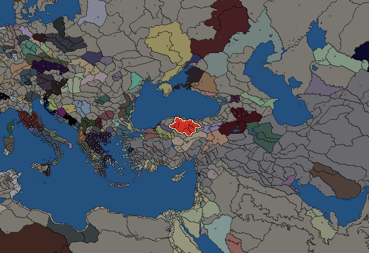
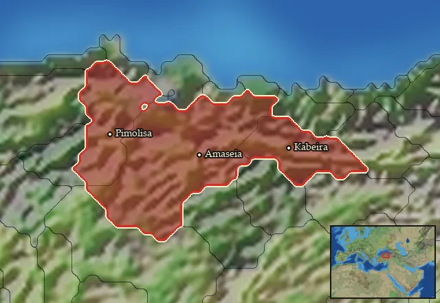

Pontus


- difficulty Medium
- Iranian culture
- believes
 Iranian
Iranian - 6 settlements
- capital Amaseia
- 15,100 manpower
- 6 characters
- 14 faction units
- 446 regional units
The campaign brief
"The greater the difficulty, the more the glory in surmounting it." – Epicurus
We are the Kingdom of Pontos. We have come from the shadows, from the chaos, from the remnants of the empires of the Achaemenids and of the demigod Alexander. We are the Mithridatic dynasty, blessed by the gods on Olympos, who bestowed the lands on both sides of the Pontic Alps to us. The first Mithridates was given rule over the Greek city Kios by the Great King, the King of Kings Ŗtachschaçā II, who was known as Artaxerxes II in the West. His son Ariobarzenes reached the rank of a royal satrap of the grand area that is known as Phrygia. But he was struck by Hybris and rebelled against the heavenly king, allying himself with the sly Athenians. For this he was righteously killed by his son, Mithridates II of Kios.
This second Mithridates was a brilliant exponent of our dynasty. When Alexander the Great came to the East, guided by Zeus himself, to destroy the Achaemenid Empire to punish the Persians for their neglect of Ahura Mazda in recent years, Mithridates' rule survived. This clever man realised that he had to align himself with the mighty Antigonos Monophtalmos once the time had come. But even honest men can fall prey to destiny, and that is what happened to him as well. Cassander, the treacherous enemy of Antigonos, created the impression that Mithridates wanted to join his side and betray Antigonos. Despite Mithridates' desperate pleas, Antigonos decided to kill him and set after his son, who was also called Mithridates. The dynasty was in danger of being wiped out, but Demetrios Poliorketes, the son of Antigonos, warned the younger Mithridates in time to flee eastwards. Together with six loyal retainers, Mithridates rode through the mountains to the hill fortress of Kimiata. It was there where the history of the Dominion of Pontos started, and Mithridates became Mithridates I Ktistes ('the Founder') of Pontos.
Starting from Paphlagonian Kimiata, Mithridates reached Amaseia in Cappadocia. The gods of the West and the East had equipped him with multiple impressive talents and skills, and the Founder quickly gathered local troops and magistrates around himself. He gradually built up a rule over the Pontic Alps region, gloriously defeated the general Diodorus just before the Battle of Kouroupedion and crowned himself king to establish the Kingdom of Pontos. In the following year his son, prince Ariobarzanes, captured the city of Amastris on our western border, an important port on the Friendly Sea. Our Kingdom had now secured a stable revenue, thanks to the ingenuity of our praised dynasty. However, after the battle of Kouroupedion, the new king of the Asian empire, Antiochos, had sent Aphrodisias to become satrap of Phrygia. This Aphrodisias threatened the Greek city Herakleia Pontika, which was already in a war with the Bithynians. The Herakliots thus came to our wise king to seek for help and had to allow us to keep Amastris when Mithridates answered their call in the times of need. This is how the Northern League was formed, and soon Nikomedes I became new king of Bithynia and joined our alliance together with Byzantium.
It was at this time that the Galatians were on their way to Asia and laid siege to Byzantium. The Herakliteans and Bithynians sent help, but the mighty Nikomedes thought it wise to hire the Galatians for his purposes and the trouser wearing Barbarians became allies of our league. They soon proved their worth, when the grand king Ptolemaios II sent his forces to Phrygia and made war on our kingdom. He had been a benefactor of the league before, but soon betrayed us and started a great war against Antiochos in Syria. Our men fought valiantly and with the help of the Celts, the enemies were driven into the sea! The Galatians, however, are unreliable allies as well and nothing can stop them to plunder and pillage the land. Ptolemaios has now concluded his war against Antiochos, but we must decide where our future will lie. Can we manoeuvre between these empires, shall we remain in the Northern League with Bitythnia, Chalcedon, Herakleia and Byzantium? A war might come, and the heir apparent Ariobarzanes is eager to prove his worth, now that his father has become old. We can rely on the Citizen Hoplites recruited from the Greek cities under our sway and the troops based on the old Persian army to defend our borders. But we should be open to anything the future might hold, open for new alliances and new possibilities...
Starting settlements
Pontus begins with 6 settlements and 15,100 manpower.
| Settlement | Region | Size | Manpower | Already built | Settlement | Region | Size | Manpower | Already built |
|---|---|---|---|---|---|---|---|---|---|
| Amaseia (capital) | Pontos | large town | 4,400 | 13 buildings | Komana-Pontos | Hieratikos Pontos | large town | 2,800 | 11 buildings |
| Pimolisa | Pimolisene | town | 1,900 | 3 buildings | Kabeira | Phanaroia | town | 2,300 | 5 buildings |
| Zela | Zelitis | town | 1,900 | 3 buildings | Kimiata | Kimiatene | town | 1,800 | 5 buildings |
What is already built in each settlement
Amaseia, in Pontos: Small Treasury, Governor's Villa, Wooden Palisade, Small Granary (Food trade), Homeland, Cisterns (Sanitation), Region Information Scroll, Roads, Basin Irrigation (Crops), Local Market, Basic Armoury, Shrine, Orchards (Rural)
Komana-Pontos, in Hieratikos Pontos: Governor's Villa, Wooden Palisade, Local Garrisons, Dependency, Cisterns (Sanitation), Region Information Scroll, Roads, Local Barter, Shrine, Grape Orchards (Rural), Contour Furrows (Crops)
Pimolisa, in Pimolisene: Governor's House, Homeland, Region Information Scroll
Kabeira, in Phanaroia: Governor's House, Homeland, Region Information Scroll, Local Barter, Grape Orchards (Rural)
Zela, in Zelitis: Governor's House, Dependency, Region Information Scroll
Kimiata, in Kimiatene: Small Colony, Governor's House, Direct Rule, Region Information Scroll, Lumber Camp (Rural)
Homeland
Pontus's homeland is 3 regions. Only there can it install the Homeland government (more on homelands).

Starting diplomacy
Allied with (2):  Galatians ·
Galatians ·  Heraclea Pontica
Heraclea Pontica
Trade agreements with (2):  Galatians ·
Galatians ·  Heraclea Pontica
Heraclea Pontica
At peace with every other faction.
Like every faction, it is also at war with the  Free Peoples, who hold every settlement no faction does.
Free Peoples, who hold every settlement no faction does.
Starting characters
| Name | Role | Age | Name | Role | Age | Name | Role | Age | Name | Role | Age |
|---|---|---|---|---|---|---|---|---|---|---|---|
| Mithridates | General | 65 | Ariobarzanes | General | 30 | Dolazelmis | General | 44 | Sapos | General | 24 |
| Lotoxes | General | 46 | Rostam | General | 23 |
Faction mechanics
From the game's own guide. See also the other game guides.
Special Mechanics
Pontus has a mercenary centre in Amaseia, check its Region Information Building for more details.
Military reforms
Pontus can recruit Greek units instead of Cappadocian in Creek settlements.
Pontus reforms 1 requirements: Own 10 ships.
Unlocks: Galato-Pontic Epibatai
Pontus reforms 2 requirements: Own 25 cities
Unlocks: Pontic General, Pontic Hetairoi, Pontic Chalkaspides, Pontic Aspidophoroi, Pontic Thorakitai, Pontic Guards, Freedmen Phalangites and enables recruitment of AOR phalangites
Pontus reforms 3 requirements: five battles against Rome
Unlocks: Imitation Legionaries
Reforms
- Adoption of the Thureos
- Pontic Hellenistic Reforms
- Mithridatic Romanized Reforms
- Greek Reforms: Thureophoroi Cavalry
For every faction: Military innovations have arrived!, Second wave of military innovations have arrived!.
Units you can recruit
The same as in the main campaign.